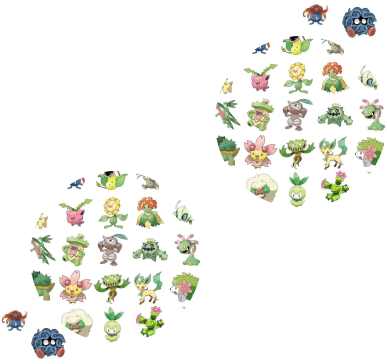
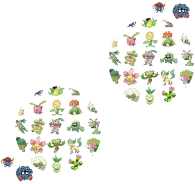

Type-Color Outliers
What are the traits of outliers when a Pokémon’s type isn’t the main color for that type?
 

Pokemon Shapes
How often do Pokémon shapes get repeated over generations? Do we have a generation with a lot of bird-like or dog-like shapes?